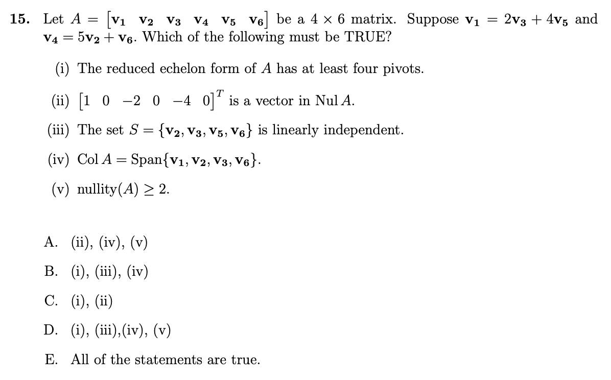

<!DOCTYPE html>
<html lang="en">
<head>
  <meta charset="UTF-8">
<meta name="viewport" content="width=device-width">
<meta name="theme-color" content="#222" media="(prefers-color-scheme: light)">
<meta name="theme-color" content="#222" media="(prefers-color-scheme: dark)">
<meta name="generator" content="Hexo 6.3.0">

<link rel="preconnect" href="https://fonts.googleapis.com" crossorigin>
<link rel="preconnect" href="https://cdn.jsdelivr.net" crossorigin>
  <link rel="apple-touch-icon" sizes="180x180" href="/en/images/apple-touch-icon-next.png">
  <link rel="icon" type="image/png" sizes="32x32" href="/en/images/favicon-32x32-next.png">
  <link rel="icon" type="image/png" sizes="16x16" href="/en/images/favicon-16x16-next.png">
  <link rel="mask-icon" href="/en/images/logo.svg" color="#222">
  <meta name="google-site-verification" content="piAnQ_mnwkhV_qh4_Se1yLzM1IwOvuq-vmYfXBkWRXU">

<link rel="stylesheet" href="/en/css/main.css">

<link rel="stylesheet" href="https://fonts.googleapis.com/css?family=EB+Garamond:300,300italic,400,400italic,700,700italic%7CNoto+Serif+SC:300,300italic,400,400italic,700,700italic%7CRoboto+Mono:300,300italic,400,400italic,700,700italic&display=swap&subset=latin,latin-ext">

<link rel="stylesheet" href="https://cdn.jsdelivr.net/npm/@fortawesome/fontawesome-free@5.15.4/css/all.min.css" integrity="sha256-mUZM63G8m73Mcidfrv5E+Y61y7a12O5mW4ezU3bxqW4=" crossorigin="anonymous">
  <link rel="stylesheet" href="https://cdn.jsdelivr.net/npm/animate.css@3.1.1/animate.min.css" integrity="sha256-PR7ttpcvz8qrF57fur/yAx1qXMFJeJFiA6pSzWi0OIE=" crossorigin="anonymous">
  <link rel="stylesheet" href="https://cdn.jsdelivr.net/npm/@fancyapps/fancybox@3.5.7/dist/jquery.fancybox.min.css" integrity="sha256-Vzbj7sDDS/woiFS3uNKo8eIuni59rjyNGtXfstRzStA=" crossorigin="anonymous">

<script class="next-config" data-name="main" type="application/json">{"hostname":"www.packetmania.net","root":"/en/","images":"/en/images","scheme":"Gemini","darkmode":true,"version":"8.8.2","exturl":false,"sidebar":{"position":"left","display":"post","padding":18,"offset":12},"copycode":true,"bookmark":{"enable":true,"color":"#222","save":"auto"},"mediumzoom":false,"lazyload":false,"pangu":false,"comments":{"style":"tabs","active":"gitalk | utterances | disqus","storage":true,"lazyload":false,"nav":{"disqus":{"text":"Disqus Comments","order":-1},"utterances":{"text":"Utterances Comments","order":-2},"gitalk":{"text":"Gitalk Comments","order":-3}}},"stickytabs":false,"motion":{"enable":true,"async":false,"transition":{"post_block":"fadeIn","post_header":"fadeInDown","post_body":"fadeInDown","coll_header":"fadeInLeft","sidebar":"fadeInUp"}},"prism":false,"i18n":{"placeholder":"Searching...","empty":"We didn't find any results for the search: ${query}","hits_time":"${hits} results found in ${time} ms","hits":"${hits} results found"},"path":"/en/search.json","localsearch":{"enable":true,"trigger":"auto","top_n_per_article":1,"unescape":false,"preload":false}}</script><script src="/en/js/config.js"></script>
<meta name="description" content="Here comes the solution and analysis for Purdue MA 26500 Spring 2022 Final exam. This exam covers all topics from Chapter 1 (Linear Equations in Linear Algebra) to Chapter 7 Section 1 (Diagonalization">
<meta property="og:type" content="article">
<meta property="og:title" content="Purdue MA 26500 Spring 2022 Final Exam Solutions">
<meta property="og:url" content="https://www.packetmania.net/en/2024/04/18/Purdue-MA265-2022-Spring-Final/index.html">
<meta property="og:site_name" content="PacketMania">
<meta property="og:description" content="Here comes the solution and analysis for Purdue MA 26500 Spring 2022 Final exam. This exam covers all topics from Chapter 1 (Linear Equations in Linear Algebra) to Chapter 7 Section 1 (Diagonalization">
<meta property="og:locale" content="en_US">
<meta property="og:image" content="https://www.packetmania.net/en/2024/01/19/Purdue-MA265-2022-Fall-Midterm1/Linear-Algebra-and-Its-Applications-6e.jpg">
<meta property="og:image" content="https://www.packetmania.net/en/2024/01/19/Purdue-MA265-2022-Fall-Midterm1/Linear-Algebra-and-Its-Appl-6th-study-guide.jpg">
<meta property="og:image" content="https://www.packetmania.net/en/2024/04/18/Purdue-MA265-2022-Spring-Final/MA265-Spring2022-Final-P1.png">
<meta property="og:image" content="https://www.packetmania.net/en/2024/04/18/Purdue-MA265-2022-Spring-Final/MA265-Spring2022-Final-P2.png">
<meta property="og:image" content="https://www.packetmania.net/en/2024/04/18/Purdue-MA265-2022-Spring-Final/MA265-Spring2022-Final-P3.png">
<meta property="og:image" content="https://www.packetmania.net/en/2024/04/18/Purdue-MA265-2022-Spring-Final/MA265-Spring2022-Final-P4.png">
<meta property="og:image" content="https://www.packetmania.net/en/2024/01/28/Purdue-MA265-2023-Fall-Midterm1/LAnIA-6th-Chap2_8-Theorem13-Warning.png">
<meta property="og:image" content="https://www.packetmania.net/en/2024/04/18/Purdue-MA265-2022-Spring-Final/MA265-Spring2022-Final-P5.png">
<meta property="og:image" content="https://www.packetmania.net/en/2024/04/18/Purdue-MA265-2022-Spring-Final/Onto.png">
<meta property="og:image" content="https://www.packetmania.net/en/2024/04/18/Purdue-MA265-2022-Spring-Final/One-to-One.png">
<meta property="og:image" content="https://www.packetmania.net/en/2024/04/18/Purdue-MA265-2022-Spring-Final/Onto-and-One-to-One.png">
<meta property="og:image" content="https://www.packetmania.net/en/2024/04/18/Purdue-MA265-2022-Spring-Final/Not-Onto-Not-One-to-One.png">
<meta property="og:image" content="https://www.packetmania.net/en/2024/04/18/Purdue-MA265-2022-Spring-Final/MA265-Spring2022-Final-P6.png">
<meta property="og:image" content="https://www.packetmania.net/en/2024/04/18/Purdue-MA265-2022-Spring-Final/MA265-Spring2022-Final-P7.png">
<meta property="og:image" content="https://www.packetmania.net/en/2024/04/18/Purdue-MA265-2022-Spring-Final/MA265-Spring2022-Final-P8.png">
<meta property="og:image" content="https://www.packetmania.net/en/2024/04/18/Purdue-MA265-2022-Spring-Final/MA265-Spring2022-Final-P9.png">
<meta property="og:image" content="https://www.packetmania.net/en/2024/04/18/Purdue-MA265-2022-Spring-Final/MA265-Spring2022-Final-P10.png">
<meta property="og:image" content="https://www.packetmania.net/en/2024/04/18/Purdue-MA265-2022-Spring-Final/MA265-Spring2022-Final-P11.png">
<meta property="og:image" content="https://www.packetmania.net/en/2024/04/18/Purdue-MA265-2022-Spring-Final/MA265-Spring2022-Final-P12.png">
<meta property="og:image" content="https://www.packetmania.net/en/2024/04/18/Purdue-MA265-2022-Spring-Final/MA265-Spring2022-Final-P13.png">
<meta property="og:image" content="https://www.packetmania.net/en/2024/04/18/Purdue-MA265-2022-Spring-Final/radian-rotation.png">
<meta property="og:image" content="https://www.packetmania.net/en/2024/04/18/Purdue-MA265-2022-Spring-Final/MA265-Spring2022-Final-P14.png">
<meta property="og:image" content="https://www.packetmania.net/en/2024/04/18/Purdue-MA265-2022-Spring-Final/MA265-Spring2022-Final-P15.png">
<meta property="og:image" content="https://www.packetmania.net/en/2024/04/18/Purdue-MA265-2022-Spring-Final/MA265-Spring2022-Final-P16.png">
<meta property="og:image" content="https://www.packetmania.net/en/2024/04/18/Purdue-MA265-2022-Spring-Final/MA265-Spring2022-Final-P17.png">
<meta property="og:image" content="https://www.packetmania.net/en/2024/04/18/Purdue-MA265-2022-Spring-Final/MA265-Spring2022-Final-P18.png">
<meta property="og:image" content="https://www.packetmania.net/en/2024/04/18/Purdue-MA265-2022-Spring-Final/MA265-Spring2022-Final-P19.png">
<meta property="og:image" content="https://www.packetmania.net/en/2024/04/18/Purdue-MA265-2022-Spring-Final/MA265-Spring2022-Final-P20.png">
<meta property="og:image" content="https://www.packetmania.net/en/2024/04/18/Purdue-MA265-2022-Spring-Final/orthonormal-matrix-theorem6.png">
<meta property="og:image" content="https://www.packetmania.net/en/2024/04/18/Purdue-MA265-2022-Spring-Final/orthonormal-matrix-theorem7.png">
<meta property="og:image" content="https://www.packetmania.net/en/2024/04/18/Purdue-MA265-2022-Spring-Final/MA265-Spring2022-Final-P21.png">
<meta property="og:image" content="https://www.packetmania.net/en/2024/04/18/Purdue-MA265-2022-Spring-Final/orthogonal-projection.png">
<meta property="og:image" content="https://www.packetmania.net/en/2024/04/18/Purdue-MA265-2022-Spring-Final/MA265-Spring2022-Final-P22.png">
<meta property="og:image" content="https://www.packetmania.net/en/2024/04/18/Purdue-MA265-2022-Spring-Final/least-squares-solution.png">
<meta property="og:image" content="https://www.packetmania.net/en/2024/04/18/Purdue-MA265-2022-Spring-Final/MA265-Spring2022-Final-P23.png">
<meta property="og:image" content="https://www.packetmania.net/en/2024/04/18/Purdue-MA265-2022-Spring-Final/MA265-Spring2022-Final-P24.png">
<meta property="og:image" content="https://www.packetmania.net/en/2024/04/18/Purdue-MA265-2022-Spring-Final/MA265-Spring2022-Final-P25.png">
<meta property="article:published_time" content="2024-04-19T06:51:21.000Z">
<meta property="article:modified_time" content="2024-04-28T22:50:20.619Z">
<meta property="article:author" content="Zixi">
<meta property="article:tag" content="Linear Algebra">
<meta name="twitter:card" content="summary">
<meta name="twitter:image" content="https://www.packetmania.net/en/2024/01/19/Purdue-MA265-2022-Fall-Midterm1/Linear-Algebra-and-Its-Applications-6e.jpg">


<link rel="canonical" href="https://www.packetmania.net/en/2024/04/18/Purdue-MA265-2022-Spring-Final/">


<script class="next-config" data-name="page" type="application/json">{"sidebar":"","isHome":false,"isPost":true,"lang":"en","comments":true,"permalink":"https://www.packetmania.net/en/2024/04/18/Purdue-MA265-2022-Spring-Final/","path":"2024/04/18/Purdue-MA265-2022-Spring-Final/","title":"Purdue MA 26500 Spring 2022 Final Exam Solutions"}</script>

<script class="next-config" data-name="calendar" type="application/json">""</script>
<title>Purdue MA 26500 Spring 2022 Final Exam Solutions | PacketMania</title>
  
    <script async src="https://www.googletagmanager.com/gtag/js?id=G-9YKBP0QK7Z"></script>
  <script class="next-config" data-name="google_analytics" type="application/json">{"tracking_id":"G-9YKBP0QK7Z","only_pageview":false}</script>
  <script src="/en/js/third-party/analytics/google-analytics.js"></script>


  <noscript>
    <link rel="stylesheet" href="/en/css/noscript.css">
  </noscript>
<link rel="alternate" href="/en/atom.xml" title="PacketMania" type="application/atom+xml">
</head>

<body itemscope itemtype="http://schema.org/WebPage" class="use-motion">
  <div class="headband"></div>

  <main class="main">
    <header class="header" itemscope itemtype="http://schema.org/WPHeader">
      <div class="header-inner"><div class="site-brand-container">
  <div class="site-nav-toggle">
    <div class="toggle" aria-label="Toggle navigation bar" role="button">
        <span class="toggle-line"></span>
        <span class="toggle-line"></span>
        <span class="toggle-line"></span>
    </div>
  </div>

  <div class="site-meta">

    <a href="/en/" class="brand" rel="start">
      <i class="logo-line"></i>
      <p class="site-title">PacketMania</p>
      <i class="logo-line"></i>
    </a>
      <p class="site-subtitle" itemprop="description">Technology | Knowledge | Sharing</p>
  </div>

  <div class="site-nav-right">
    <div class="toggle popup-trigger">
        <i class="fa fa-search fa-fw fa-lg"></i>
    </div>
  </div>
</div>


<nav class="site-nav">
  <ul class="main-menu menu">
        <li class="menu-item menu-item-home"><a href="/en/" rel="section"><i class="fa fa-home fa-fw"></i>Home</a></li>
        <li class="menu-item menu-item-tags"><a href="/en/tags/" rel="section"><i class="fa fa-tags fa-fw"></i>Tags</a></li>
        <li class="menu-item menu-item-categories"><a href="/en/categories/" rel="section"><i class="fa fa-th fa-fw"></i>Categories</a></li>
        <li class="menu-item menu-item-archives"><a href="/en/archives/" rel="section"><i class="fa fa-archive fa-fw"></i>Archives</a></li>
        <li class="menu-item menu-item-sitemap"><a href="/en/sitemap.xml" rel="section"><i class="fa fa-sitemap fa-fw"></i>Sitemap</a></li>
        <li class="menu-item menu-item-rss"><a href="/en/atom.xml" rel="section"><i class="fa fa-rss fa-fw"></i>RSS</a></li>
        <li class="menu-item menu-item-language"><a href="https://www.packetmania.net/" rel="section"><i class="fa fa-language fa-fw"></i>中文</a></li>
      <li class="menu-item menu-item-search">
        <a role="button" class="popup-trigger"><i class="fa fa-search fa-fw"></i>Search
        </a>
      </li>
  </ul>
</nav>


  <div class="search-pop-overlay">
    <div class="popup search-popup"><div class="search-header">
  <span class="search-icon">
    <i class="fa fa-search"></i>
  </span>
  <div class="search-input-container">
    <input autocomplete="off" autocapitalize="off" maxlength="80"
           placeholder="Searching..." spellcheck="false"
           type="search" class="search-input">
  </div>
  <span class="popup-btn-close" role="button">
    <i class="fa fa-times-circle"></i>
  </span>
</div>
<div class="search-result-container no-result">
  <div class="search-result-icon">
    <i class="fa fa-spinner fa-pulse fa-5x"></i>
  </div>
</div>

    </div>
  </div>

</div>
        
  
  <div class="toggle sidebar-toggle" role="button">
    <span class="toggle-line"></span>
    <span class="toggle-line"></span>
    <span class="toggle-line"></span>
  </div>

  <aside class="sidebar">

    <div class="sidebar-inner sidebar-nav-active sidebar-toc-active">
      <ul class="sidebar-nav">
        <li class="sidebar-nav-toc">
          Table of Contents
        </li>
        <li class="sidebar-nav-overview">
          Overview
        </li>
      </ul>

      <div class="sidebar-panel-container">
        <!--noindex-->
        <div class="post-toc-wrap sidebar-panel">
            <div class="post-toc animated"><ol class="nav"><li class="nav-item nav-level-2"><a class="nav-link" href="#introduction"><span class="nav-number">1.</span> <span class="nav-text">Introduction</span></a><ol class="nav-child"><li class="nav-item nav-level-3"><a class="nav-link" href="#textbook-and-study-guide"><span class="nav-number">1.1.</span> <span class="nav-text">Textbook and Study Guide</span></a></li><li class="nav-item nav-level-3"><a class="nav-link" href="#exam-information"><span class="nav-number">1.2.</span> <span class="nav-text">Exam Information</span></a></li><li class="nav-item nav-level-3"><a class="nav-link" href="#reference-links"><span class="nav-number">1.3.</span> <span class="nav-text">Reference Links</span></a></li></ol></li><li class="nav-item nav-level-2"><a class="nav-link" href="#spring-2022-final-exam-solutions"><span class="nav-number">2.</span> <span class="nav-text">Spring 2022 Final Exam Solutions</span></a><ol class="nav-child"><li class="nav-item nav-level-3"><a class="nav-link" href="#problem-1"><span class="nav-number">2.1.</span> <span class="nav-text">Problem 1</span></a></li><li class="nav-item nav-level-3"><a class="nav-link" href="#problem-2"><span class="nav-number">2.2.</span> <span class="nav-text">Problem 2</span></a></li><li class="nav-item nav-level-3"><a class="nav-link" href="#problem-3"><span class="nav-number">2.3.</span> <span class="nav-text">Problem 3</span></a></li><li class="nav-item nav-level-3"><a class="nav-link" href="#problem-4"><span class="nav-number">2.4.</span> <span class="nav-text">Problem 4</span></a></li><li class="nav-item nav-level-3"><a class="nav-link" href="#problem-5"><span class="nav-number">2.5.</span> <span class="nav-text">Problem 5</span></a></li><li class="nav-item nav-level-3"><a class="nav-link" href="#problem-6"><span class="nav-number">2.6.</span> <span class="nav-text">Problem 6</span></a></li><li class="nav-item nav-level-3"><a class="nav-link" href="#problem-7"><span class="nav-number">2.7.</span> <span class="nav-text">Problem 7</span></a></li><li class="nav-item nav-level-3"><a class="nav-link" href="#problem-8"><span class="nav-number">2.8.</span> <span class="nav-text">Problem 8</span></a></li><li class="nav-item nav-level-3"><a class="nav-link" href="#problem-9"><span class="nav-number">2.9.</span> <span class="nav-text">Problem 9</span></a></li><li class="nav-item nav-level-3"><a class="nav-link" href="#problem-10"><span class="nav-number">2.10.</span> <span class="nav-text">Problem 10</span></a></li><li class="nav-item nav-level-3"><a class="nav-link" href="#problem-11"><span class="nav-number">2.11.</span> <span class="nav-text">Problem 11</span></a></li><li class="nav-item nav-level-3"><a class="nav-link" href="#problem-12"><span class="nav-number">2.12.</span> <span class="nav-text">Problem 12</span></a></li><li class="nav-item nav-level-3"><a class="nav-link" href="#problem-13"><span class="nav-number">2.13.</span> <span class="nav-text">Problem 13</span></a></li><li class="nav-item nav-level-3"><a class="nav-link" href="#problem-14"><span class="nav-number">2.14.</span> <span class="nav-text">Problem 14</span></a></li><li class="nav-item nav-level-3"><a class="nav-link" href="#problem-15"><span class="nav-number">2.15.</span> <span class="nav-text">Problem 15</span></a></li><li class="nav-item nav-level-3"><a class="nav-link" href="#problem-16"><span class="nav-number">2.16.</span> <span class="nav-text">Problem 16</span></a></li><li class="nav-item nav-level-3"><a class="nav-link" href="#problem-17"><span class="nav-number">2.17.</span> <span class="nav-text">Problem 17</span></a></li><li class="nav-item nav-level-3"><a class="nav-link" href="#problem-18"><span class="nav-number">2.18.</span> <span class="nav-text">Problem 18</span></a></li><li class="nav-item nav-level-3"><a class="nav-link" href="#problem-19"><span class="nav-number">2.19.</span> <span class="nav-text">Problem 19</span></a></li><li class="nav-item nav-level-3"><a class="nav-link" href="#problem-20"><span class="nav-number">2.20.</span> <span class="nav-text">Problem 20</span></a></li><li class="nav-item nav-level-3"><a class="nav-link" href="#problem-21"><span class="nav-number">2.21.</span> <span class="nav-text">Problem 21</span></a></li><li class="nav-item nav-level-3"><a class="nav-link" href="#problem-22"><span class="nav-number">2.22.</span> <span class="nav-text">Problem 22</span></a></li><li class="nav-item nav-level-3"><a class="nav-link" href="#problem-23"><span class="nav-number">2.23.</span> <span class="nav-text">Problem 23</span></a></li><li class="nav-item nav-level-3"><a class="nav-link" href="#problem-24"><span class="nav-number">2.24.</span> <span class="nav-text">Problem 24</span></a></li><li class="nav-item nav-level-3"><a class="nav-link" href="#problem-25"><span class="nav-number">2.25.</span> <span class="nav-text">Problem 25</span></a></li></ol></li><li class="nav-item nav-level-2"><a class="nav-link" href="#other-ma265-final-exam-solutions"><span class="nav-number">3.</span> <span class="nav-text">Other MA265 Final Exam Solutions</span></a></li></ol></div>
        </div>
        <!--/noindex-->

        <div class="site-overview-wrap sidebar-panel">
          <div class="site-author site-overview-item animated" itemprop="author" itemscope itemtype="http://schema.org/Person">
    
  <p class="site-author-name" itemprop="name">Zixi</p>
  <div class="site-description" itemprop="description">Computer Networking and Software Design & Implementation</div>
</div>
<div class="site-state-wrap site-overview-item animated">
  <nav class="site-state">
      <div class="site-state-item site-state-posts">
        <a href="/en/archives/">
          <span class="site-state-item-count">27</span>
          <span class="site-state-item-name">posts</span>
        </a>
      </div>
      <div class="site-state-item site-state-categories">
          <a href="/en/categories/">
        <span class="site-state-item-count">5</span>
        <span class="site-state-item-name">categories</span></a>
      </div>
      <div class="site-state-item site-state-tags">
          <a href="/en/tags/">
        <span class="site-state-item-count">13</span>
        <span class="site-state-item-name">tags</span></a>
      </div>
  </nav>
</div>
  <div class="links-of-author site-overview-item animated">
      <span class="links-of-author-item">
        <a href="https://github.com/packetmania" title="GitHub → https:&#x2F;&#x2F;github.com&#x2F;packetmania" rel="noopener" target="_blank"><i class="fab fa-github fa-fw"></i>GitHub</a>
      </span>
      <span class="links-of-author-item">
        <a href="mailto:zixiruoxue@gmail.com" title="E-Mail → mailto:zixiruoxue@gmail.com" rel="noopener" target="_blank"><i class="fa fa-envelope fa-fw"></i>E-Mail</a>
      </span>
      <span class="links-of-author-item">
        <a href="https://twitter.com/zixisean" title="Twitter → https:&#x2F;&#x2F;twitter.com&#x2F;zixisean" rel="noopener" target="_blank"><i class="fab fa-twitter fa-fw"></i>Twitter</a>
      </span>
      <span class="links-of-author-item">
        <a href="https://stackoverflow.com/users/15140531" title="StackOverflow → https:&#x2F;&#x2F;stackoverflow.com&#x2F;users&#x2F;15140531" rel="noopener" target="_blank"><i class="fab fa-stack-overflow fa-fw"></i>StackOverflow</a>
      </span>
  </div>
  <div class="cc-license site-overview-item animated" itemprop="license">
    <a href="https://creativecommons.org/licenses/by-nc-nd/4.0/" class="cc-opacity" rel="noopener" target="_blank"></a>
  </div>


        </div>
      </div>
        <div class="back-to-top animated" role="button" aria-label="Back to top">
          <i class="fa fa-arrow-up"></i>
          <span>0%</span>
        </div>
    </div>
  </aside>
  <div class="sidebar-dimmer"></div>


    </header>

    
  <div class="reading-progress-bar"></div>
  <a role="button" class="book-mark-link book-mark-link-fixed"></a>

<noscript>
  <div class="noscript-warning">Theme NexT works best with JavaScript enabled</div>
</noscript>


    <div class="main-inner post posts-expand">


  


<div class="post-block">
  
  

  <article itemscope itemtype="http://schema.org/Article" class="post-content" lang="en">
    <link itemprop="mainEntityOfPage" href="https://www.packetmania.net/en/2024/04/18/Purdue-MA265-2022-Spring-Final/">

    <span hidden itemprop="author" itemscope itemtype="http://schema.org/Person">
      <meta itemprop="image" content="/en/images/ccie.gif">
      <meta itemprop="name" content="Zixi">
      <meta itemprop="description" content="Computer Networking and Software Design & Implementation">
    </span>

    <span hidden itemprop="publisher" itemscope itemtype="http://schema.org/Organization">
      <meta itemprop="name" content="PacketMania">
    </span>
      <header class="post-header">
        <h1 class="post-title" itemprop="name headline">
          Purdue MA 26500 Spring 2022 Final Exam Solutions
        </h1>

        <div class="post-meta-container">
          <div class="post-meta">
    <span class="post-meta-item">
      <span class="post-meta-item-icon">
        <i class="far fa-calendar"></i>
      </span>
      <span class="post-meta-item-text">Posted on</span>

      <time title="Created: 2024-04-18 23:51:21" itemprop="dateCreated datePublished" datetime="2024-04-18T23:51:21-07:00">2024-04-18</time>
    </span>
      <span class="post-meta-item">
        <span class="post-meta-item-icon">
          <i class="far fa-calendar-check"></i>
        </span>
        <span class="post-meta-item-text">Edited on</span>
        <time title="Modified: 2024-04-28 15:50:20" itemprop="dateModified" datetime="2024-04-28T15:50:20-07:00">2024-04-28</time>
      </span>
    <span class="post-meta-item">
      <span class="post-meta-item-icon">
        <i class="far fa-folder"></i>
      </span>
      <span class="post-meta-item-text">In</span>
        <span itemprop="about" itemscope itemtype="http://schema.org/Thing">
          <a href="/en/categories/Study-Notes/" itemprop="url" rel="index"><span itemprop="name">Study Notes</span></a>
        </span>
    </span>

  
    <span class="post-meta-item" title="Views" id="busuanzi_container_page_pv">
      <span class="post-meta-item-icon">
        <i class="far fa-eye"></i>
      </span>
      <span class="post-meta-item-text">Views: </span>
      <span id="busuanzi_value_page_pv"></span>
    </span>
    <span class="post-meta-break"></span>
    <span class="post-meta-item" title="Symbols count in article">
      <span class="post-meta-item-icon">
        <i class="far fa-file-word"></i>
      </span>
      <span class="post-meta-item-text">Symbols count in article: </span>
      <span>27k</span>
    </span>
    <span class="post-meta-item" title="Reading time">
      <span class="post-meta-item-icon">
        <i class="far fa-clock"></i>
      </span>
      <span class="post-meta-item-text">Reading time &asymp;</span>
      <span>24 mins.</span>
    </span>
</div>

        </div>
      </header>

    
    
    
    <div class="post-body" itemprop="articleBody">
        <p>Here comes the solution and analysis for Purdue MA 26500 Spring 2022 Final exam. This exam covers all topics from Chapter 1 (Linear Equations in Linear Algebra) to Chapter 7 Section 1 (Diagonalization of Symmetric Matrices). <span id="more"></span></p>
<h2 id="introduction">Introduction</h2>
<p>Purdue Department of Mathematics provides a linear algebra course MA 26500 every semester, which is mandatory for undergraduate students of almost all science and engineering majors.</p>
<h3 id="textbook-and-study-guide">Textbook and Study Guide</h3>
<blockquote>
<p><strong><em>Disclosure</em></strong>: <em>This blog site is reader-supported. When you buy through the affiliate links below, as an Amazon Associate, I earn a tiny commission from qualifying purchases. Thank you.</em></p>
</blockquote>
<p>MA 26500 textbook is <a target="_blank" rel="noopener" href="https://amzn.to/3Srz7qm"><em>Linear Algebra and its Applications</em></a> (6th Edition) by David C. Lay, Steven R. Lay, and Judi J. McDonald. The authors have also published a <a target="_blank" rel="noopener" href="https://amzn.to/428m5Bl"><em>student study guide</em></a> for it, which is available for purchase on Amazon as well.</p>
<div class="group-picture"><div class="group-picture-row"><div class="group-picture-column"><a target="_blank" rel="noopener" href="https://amzn.to/3Srz7qm"></a></div><div class="group-picture-column"><a target="_blank" rel="noopener" href="https://amzn.to/428m5Bl"></a></div></div></div>
<h3 id="exam-information">Exam Information</h3>
<p>MA 26500 Final exam covers all the topics from Chapter 1 to Chapter 7 Sections 1 in the textbook. This is a two-hour comprehensive common final exam given during the final exam week. There are 25 multiple-choice questions on the final exam.</p>
<h3 id="reference-links">Reference Links</h3>
<ul>
<li><a target="_blank" rel="noopener" href="https://www.math.purdue.edu/academic/courses/semester/semesters">Purdue Department of Mathematics Course Achive</a></li>
<li><a target="_blank" rel="noopener" href="https://www.math.purdue.edu/academic/courses/semester/202420/ma26500/index.html">Purdue MA 26500 Spring 2024</a></li>
<li><a target="_blank" rel="noopener" href="https://www.math.purdue.edu/academic/courses/oldexams.php?course=MA26500">Purdue MA 26500 Exam Archive</a></li>
</ul>
<h2 id="spring-2022-final-exam-solutions">Spring 2022 Final Exam Solutions</h2>
<h3 id="problem-1">Problem 1</h3>
<p></p>
<details class="note success"><summary><p>Problem 1 Solution</p>
</summary>
<p>Start with the augmented matrix of the system, and do row reduction like the below</p>
<p><span class="math display">\[
\left[\begin{array}{ccc|c}1&amp;2&amp;3&amp;16\\2&amp;0&amp;-2&amp;14\\3&amp;2&amp;1&amp;3a\end{array}\right]\sim
\left[\begin{array}{ccc|c}1&amp;2&amp;3&amp;16\\0&amp;-4&amp;-8&amp;-18\\0&amp;-4&amp;-8&amp;3a-48\end{array}\right]\sim
\left[\begin{array}{ccc|c}1&amp;2&amp;3&amp;16\\0&amp;-4&amp;-8&amp;-18\\0&amp;0&amp;0&amp;3a-30\end{array}\right]
\]</span></p>
<p>Clearly, this system of equations is consistent when <span class="math inline">\(a=10\)</span>. So the answer is <mark><strong>B</strong></mark>.</p>

</details>
<h3 id="problem-2">Problem 2</h3>
<p></p>
<details class="note success"><summary><p>Problem 2 Solution</p>
</summary>
<p>First review the properties of determinants:</p>
<blockquote>
<p>Let A be a square matrix.<br />
a. If a multiple of one row of <span class="math inline">\(A\)</span> is added to another row to produce a matrix <span class="math inline">\(B\)</span>, then <span class="math inline">\(\det B =\det A\)</span>.<br />
b. If two rows of <span class="math inline">\(A\)</span> are interchanged to produce <span class="math inline">\(B\)</span>, then <span class="math inline">\(\det B=-\det A\)</span>.<br />
c. If one row of A is multiplied by <span class="math inline">\(k\)</span> to produce B, then <span class="math inline">\(\det B=k\cdot\det A\)</span>.</p>
</blockquote>
<p>Also since <span class="math inline">\(\det A^T=\det A\)</span>, a row operation on <span class="math inline">\(A^T\)</span> amounts to a column operation on <span class="math inline">\(A\)</span>. The above property is true for column operations as well.</p>
<p>With these properties in mind, we can do the following</p>
<p><span class="math display">\[\begin{align}
\begin{vmatrix}d&amp;2a&amp;g+d\\e&amp;2b&amp;h+e\\f&amp;2c&amp;i+f\end{vmatrix}
&amp;=2\times \begin{vmatrix}d&amp;a&amp;g+d\\e&amp;b&amp;h+e\\f&amp;c&amp;i+f\end{vmatrix}=
  2\times \begin{vmatrix}d&amp;a&amp;g\\e&amp;b&amp;h\\f&amp;c&amp;i\end{vmatrix}=
  2\times (-1)\times \begin{vmatrix}a&amp;d&amp;g\\b&amp;e&amp;h\\c&amp;f&amp;i\end{vmatrix}\\
&amp;=(-2)\times \begin{vmatrix}a&amp;b&amp;c\\d&amp;e&amp;f\\g&amp;h&amp;i\end{vmatrix}=(-2)\times 1=-2
\end{align}\]</span></p>
<p>So the answer is <mark><strong>A</strong></mark>.</p>

</details>
<h3 id="problem-3">Problem 3</h3>
<p></p>
<details class="note success"><summary><p>Problem 3 Solution</p>
</summary>
<p>Denote <span class="math inline">\(A=BCB^{-1}\)</span>, it can be seen that <span class="math display">\[\det A=\det (BCB^{-1})=\det B\det C\det B^{-1}=\det (BB^{-1})\det C=\det C\]</span></p>
<p>Thus we can directly write down the determinant calculation process like below (applying row operations) <span class="math display">\[
\begin{vmatrix}1&amp;2&amp;3\\1&amp;4&amp;5\\-1&amp;3&amp;7\end{vmatrix}=
\begin{vmatrix}1&amp;2&amp;3\\0&amp;2&amp;2\\0&amp;5&amp;10\end{vmatrix}=
1\times (-1)^{1+1}\begin{vmatrix}2&amp;2\\5&amp;10\end{vmatrix}=
1\times (2\times 10-2\times 5)=10
\]</span></p>
<p>So the answer is <mark><strong>B</strong></mark>.</p>

</details>
<h3 id="problem-4">Problem 4</h3>
<p></p>
<details class="note success"><summary><p>Problem 4 Solution</p>
</summary>
<p>From the book Section 4.6 (Rank):</p>
<blockquote>
<p><em>If two matrices A and B are row equivalent, then their row spaces are the same. If B is in echelon form, the nonzero rows of B form a basis for the row space of A as well as for that of B.</em></p>
</blockquote>
<p>Also, pay attention to the following warning from the book as well:</p>
<p></p>
<p>With this information, we can tell that statements (i) and (iii) are TRUE, while statements (iv) and (v) are FALSE because "row operations can change the column space of a matrix". If we do row reduction to the augmented matrix, the far right column (representing <span class="math inline">\(\pmb b\)</span>) would be changed. This proves (iv) is also FALSE.</p>
<p>For (ii), since <span class="math inline">\(A\)</span> and <span class="math inline">\(B\)</span> are row-equivalent matrices, their null spaces are the same. This is because none of these operations change the solution set of homogeneous linear equations. So <span class="math inline">\(A\pmb x=\pmb 0\)</span> if and and only if <span class="math inline">\(B\pmb x=\pmb 0\)</span>. Hence <span class="math inline">\(\text{Nul}\;A=\{\pmb 0\}\)</span>, so the columns of <span class="math inline">\(A\)</span> are <strong>linearly independent</strong>. This statement is FALSE.</p>
<p>So the answer is <mark><strong>E</strong></mark>.</p>
<p>Note the following statement is also TRUE.</p>
<blockquote>
<p>Let <span class="math inline">\(A\)</span> be an <span class="math inline">\(n\times n\)</span> matrix. If <span class="math inline">\(\text{Col}\;A = \text{Nul}\;A\)</span>, it can be proven that <span class="math inline">\(\text{Nul}\;A^2=\mathbb R^n\)</span>.</p>
</blockquote>

</details>
<h3 id="problem-5">Problem 5</h3>
<p></p>
<details class="note success"><summary><p>Problem 5 Solution</p>
</summary>
<p><span class="math inline">\(A\)</span> is a <span class="math inline">\(4\times 5\)</span> matrix for a linear transformation <span class="math inline">\(T\)</span> from <span class="math inline">\(\mathbb R^5\)</span> to <span class="math inline">\(\mathbb R^4\)</span>. Correspondingly, <span class="math inline">\(A^T\)</span> is a <span class="math inline">\(5\times 4\)</span> matrix for a linear transformation <span class="math inline">\(S\)</span> from <span class="math inline">\(\mathbb R^4\)</span> to <span class="math inline">\(\mathbb R^5\)</span>.</p>
<div class="group-picture">
<div class="group-picture-row">
<div class="group-picture-column">

</div>
<div class="group-picture-column">

</div>
</div>
<div class="group-picture-row">
<div class="group-picture-column">

</div>
<div class="group-picture-column">

</div>
</div>
</div>
<p><strong>A.</strong> Note that <span class="math inline">\(A\)</span> has an all-zero column, and has a pivot position in each row (rank 4). This means it has only 4 linear independent columns. For each <span class="math inline">\(\pmb b\)</span> in <span class="math inline">\(\mathbb R^4\)</span>, the equation<span class="math inline">\(A\pmb x=\pmb b\)</span> is consistent. In other words, the linear transformation <span class="math inline">\(T\)</span> maps <span class="math inline">\(\mathbb R^5\)</span> <strong>onto</strong> <span class="math inline">\(\mathbb R^4\)</span>. But we can multiply any value with the first all-zeros vector, it is definitely not one-to-one. This statement is FALSE.</p>
<p><strong>B.</strong> Remember that <em>"A linear transformation <span class="math inline">\(S\)</span> is one-to-one if and only if the columns of the matrix are linearly independent, and if and only if <span class="math inline">\(S(\pmb x)=\pmb 0\)</span> has only the trivial solution."</em> <span class="math inline">\(A^T\)</span> satisfies this. This statement is TRUE.</p>
<p><strong>C.</strong> For <span class="math inline">\(S\)</span> to be onto, the rank of <span class="math inline">\(A^T\)</span> must equal the number of rows. So it needs rank 5 to be onto. However, it has a row of all zeros, its rank is 4. Therefore, S is not onto. Not all <span class="math inline">\(\pmb b\)</span> has solutions.</p>
<p><strong>D.</strong> <span class="math inline">\(A^T\)</span> has rank 4 and 4 columns. So the nullity is 4-4 = 0. This statement is FALSE. Alternately we can see that <span class="math inline">\(A^T\pmb x=\pmb 0\)</span> has only a trivial (all-zero) solution.</p>
<p><strong>E.</strong> The range of <span class="math inline">\(T\)</span> is the column space of <span class="math inline">\(A\)</span>. It is <span class="math inline">\(\mathbb R^4\)</span>. This statement is FALSE.</p>
<p>So the answer is <mark><strong>B</strong></mark>.</p>

</details>
<h3 id="problem-6">Problem 6</h3>
<p></p>
<details class="note success"><summary><p>Problem 6 Solution</p>
</summary>
<p>Note the trace of a square matrix <span class="math inline">\(A\)</span> is the sum of the diagonal entries in A and is denoted by tr <span class="math inline">\(A\)</span>.</p>
<p>Remember the formula for inverse matrix <span class="math display">\[
A^{-1}=\frac{1}{\det A}\text{adj}\;A=[b_{ij}]\qquad
b_{ij}=\frac{C_{ji}}{\det A}\qquad C_{ji}=(-1)^{i+j}\det A_{ji}
\]</span> Where <span class="math inline">\(\text{adj}\;A\)</span> is the adjugate of <span class="math inline">\(A\)</span>, <span class="math inline">\(C_{ji}\)</span> is a cofactor of <span class="math inline">\(A\)</span>, and <span class="math inline">\(A_{ji}\)</span> denotes the submatrix of <span class="math inline">\(A\)</span> formed by deleting row <span class="math inline">\(j\)</span> and column <span class="math inline">\(i\)</span>.</p>
<p>Now we can find the answer step-by-step:</p>
<ol type="1">
<li><p>Calculate the determinant of <span class="math inline">\(A\)</span> <span class="math display">\[
\begin{vmatrix}1&amp;2&amp;7\\1&amp;3&amp;12\\2&amp;5&amp;20\end{vmatrix}=
\begin{vmatrix}1&amp;2&amp;7\\0&amp;1&amp;5\\0&amp;1&amp;6\end{vmatrix}=
\begin{vmatrix}1&amp;2&amp;7\\0&amp;1&amp;5\\0&amp;0&amp;1\end{vmatrix}=1
\]</span></p></li>
<li><p>Calculate <span class="math inline">\(b_{11}\)</span>, <span class="math inline">\(b_{22}\)</span>, and <span class="math inline">\(b_{33}\)</span> <span class="math display">\[
b_{11}=\frac{C_{11}}{1}=\begin{vmatrix}3&amp;12\\5&amp;20\end{vmatrix}=0\quad
b_{22}=\frac{C_{22}}{1}=\begin{vmatrix}1&amp;7\\2&amp;20\end{vmatrix}=6\quad
b_{33}=\frac{C_{33}}{1}=\begin{vmatrix}1&amp;2\\1&amp;3\end{vmatrix}=1
\]</span></p></li>
<li><p>Get the trace of <span class="math inline">\(A^{-1}\)</span> <span class="math display">\[\text{tr}\;A^{-1}=b_{11}+b_{22}+b_{33}=0+6+1=7\]</span></p></li>
</ol>
<p>So the answer is <mark><strong>C</strong></mark>.</p>

</details>
<h3 id="problem-7">Problem 7</h3>
<p></p>
<details class="note success"><summary><p>Problem 7 Solution</p>
</summary>
<p>First do row reduction to get <strong>row echelon form</strong> of the matrix <span class="math inline">\(A\)</span>:</p>
<p><span class="math display">\[\begin{align}
&amp;\begin{bmatrix}1&amp;2&amp;2&amp;10&amp;3\\2&amp;4&amp;1&amp;11&amp;5\\3&amp;6&amp;2&amp;18&amp;1\end{bmatrix}\sim
\begin{bmatrix}1&amp;2&amp;2&amp;10&amp;3\\0&amp;0&amp;-3&amp;-9&amp;-1\\0&amp;0&amp;-4&amp;-12&amp;-8\end{bmatrix}\sim
\begin{bmatrix}1&amp;2&amp;2&amp;10&amp;3\\0&amp;0&amp;3&amp;9&amp;1\\0&amp;0&amp;1&amp;3&amp;2\end{bmatrix}\\
\sim&amp;\begin{bmatrix}1&amp;2&amp;2&amp;10&amp;3\\0&amp;0&amp;3&amp;9&amp;1\\0&amp;0&amp;3&amp;9&amp;6\end{bmatrix}
\sim\begin{bmatrix}\color{fuchsia}{1}&amp;2&amp;2&amp;10&amp;3\\0&amp;0&amp;\color{fuchsia}{3}&amp;9&amp;1\\0&amp;0&amp;0&amp;0&amp;\color{fuchsia}{5}\end{bmatrix}
\end{align}\]</span></p>
<p>This shows that there are 3 pivot elements and 3 corresponding pivot columns (from the original matrix <span class="math inline">\(A\)</span>) shown below</p>
<p><span class="math display">\[\begin{Bmatrix}
\begin{bmatrix}1\\2\\3\end{bmatrix},
\begin{bmatrix}2\\1\\2\end{bmatrix},
\begin{bmatrix}3\\5\\1\end{bmatrix}
\end{Bmatrix}\]</span></p>
<p>These columns form a basis for <span class="math inline">\(\text{Col}\;A\)</span>. Now look at the statements A and E.</p>
<p>In the statement A, the first vector equals the sum of the first two pivot columns above. In the statement E, the third vector equals the sum of the last two pivot columns above. So both are TRUE.</p>
<p>To check the statements B, C, and D, we need to find the basis for <span class="math inline">\(\text{Nul}\;A\)</span>. From the <strong>row echelon form</strong>, it can be deduced that with <span class="math inline">\(x_2\)</span> and <span class="math inline">\(x_4\)</span> as free variable <span class="math display">\[\begin{align}
x_5&amp;=0\\x_3&amp;=-3x_4\\x_1&amp;=-2x_2-2x_3-10x_4=-2x_2-4x_4
\end{align}\]</span> This leads to <span class="math display">\[
\begin{bmatrix}x_1\\x_2\\x_3\\x_4\\x_5\end{bmatrix}=
\begin{bmatrix}-2x_2-4x_4\\x_2\\-3x_4\\x_4\\0\end{bmatrix}=
x_2\begin{bmatrix}-2\\1\\0\\0\\0\end{bmatrix}+x_4\begin{bmatrix}-4\\0\\-3\\1\\0\end{bmatrix}
\]</span></p>
<p>So the basis of <span class="math inline">\(\text{Nul}\;A\)</span> is <span class="math display">\[\begin{Bmatrix}
\begin{bmatrix}-2\\1\\0\\0\\0\end{bmatrix},
\begin{bmatrix}-4\\0\\-3\\1\\0\end{bmatrix}
\end{Bmatrix}\]</span></p>
<p>The statement B is TRUE because its first vector is the first column above scaled by 2, and its 2nd vector is just the 2nd column above scaled by -1.</p>
<p>For statement D, its 1st vector is the same as the first column above, and the 2nd vector is just the sum of the two columns. It is TRUE as well.</p>
<p>The statement C is FALSE since generating the 2nd vector with 3 and -2 coexisting is impossible.</p>
<p>So the answer is <mark><strong>C</strong></mark>.</p>

</details>
<h3 id="problem-8">Problem 8</h3>
<p></p>
<details class="note success"><summary><p>Problem 8 Solution</p>
</summary>
<p>Per the definition of Subspace in Section 4.1 "Vector Spaces and Subspaces"</p>
<blockquote>
<p>A <strong>subspace</strong> of a vector space <span class="math inline">\(V\)</span> is a subset <span class="math inline">\(H\)</span> of <span class="math inline">\(V\)</span> that has three properties:<br />
a. The zero vector of <span class="math inline">\(V\)</span> is in <span class="math inline">\(H\)</span>.<br />
b. <span class="math inline">\(H\)</span> is closed under vector addition. That is, for each <span class="math inline">\(\pmb u\)</span> and <span class="math inline">\(\pmb v\)</span> in <span class="math inline">\(H\)</span>, the sum <span class="math inline">\(\pmb u + \pmb v\)</span> is in <span class="math inline">\(H\)</span>.<br />
c. <span class="math inline">\(H\)</span> is closed under multiplication by scalars. That is, for each <span class="math inline">\(\pmb u\)</span> in <span class="math inline">\(H\)</span> and each scalar <span class="math inline">\(c\)</span>, the vector <span class="math inline">\(c\pmb u\)</span> is in <span class="math inline">\(H\)</span>.</p>
</blockquote>
<p><strong>(i)</strong> This is FALSE since the zero vector <span class="math inline">\(\begin{bmatrix}0\\0\end{bmatrix}\)</span> is not satifying the condition.</p>
<p><strong>(ii)</strong> Obviously the zero vector is in the set because <span class="math inline">\(A\pmb 0=3\pmb 0\)</span>. This is the set of eigenvectors of <span class="math inline">\(A\)</span> corresponding to the eigenvalue 3. Eigenvectors corresponding to the same eigenvalue, along with the zero vector, form a subspace. So this is a subspace of V. It is TRUE.</p>
<p>Besides it is easy to verify that <span class="math display">\[
A(c\pmb v)=cA\pmb v=c3\pmb v=3(c\pmb v)
A(\pmb v_1+\pmb v_2)=A\pmb v_1+A\pmb v_2=3\pmb v_1+3\pmb v_2=3(\pmb v_1+\pmb v_2)
\]</span> So the set is closed under both multiplication by scalars and vector addition, hence it forms a subspace.</p>
<p><strong>(iii)</strong> First check if the zero vector is in the vector set, we get the system of equations below <span class="math display">\[
\left\{ 
\begin{array}{ll}
a+b+3d&amp;=0\\ 
a+c&amp;=-1\\ 
-c+d&amp;=1\\
b+2c&amp;=0
\end{array}
\right. 
\]</span></p>
<p>Solve this with the augmented matrix, and do row reduction in the process</p>
<p><span class="math display">\[\begin{align}
&amp;\left[\begin{array}{cccc|c}1&amp;1&amp;0&amp;3&amp;0\\1&amp;0&amp;1&amp;0&amp;-1\\0&amp;0&amp;-1&amp;1&amp;1\\0&amp;1&amp;2&amp;0&amp;0\end{array}\right]\sim
\left[\begin{array}{cccc|c}1&amp;1&amp;0&amp;3&amp;0\\0&amp;-1&amp;1&amp;-3&amp;-1\\0&amp;0&amp;-1&amp;1&amp;1\\0&amp;1&amp;2&amp;0&amp;0\end{array}\right]\\
\sim&amp;\left[\begin{array}{cccc|c}1&amp;1&amp;0&amp;3&amp;0\\0&amp;-1&amp;1&amp;-3&amp;-1\\0&amp;0&amp;-1&amp;1&amp;1\\0&amp;0&amp;3&amp;-3&amp;-1\end{array}\right]\sim\left[\begin{array}{cccc|c}1&amp;1&amp;0&amp;3&amp;0\\0&amp;-1&amp;1&amp;-3&amp;-1\\0&amp;0&amp;-1&amp;1&amp;1\\0&amp;0&amp;0&amp;0&amp;2\end{array}\right]
\end{align}\]</span> This ends up with an inconsistent system without a solution. This means the zero vector is not in the set. This set does NOT form a subspace.</p>
<p><strong>(iv)</strong> For <span class="math inline">\(\mathbb P_3\)</span>, we can write <span class="math inline">\(p(t)=a_0+a_1t+a_2t^2+a_3t^3\)</span> and <span class="math inline">\(p&#39;(t)=a_1+2a_2t+3a_3t^2\)</span>. Now since <span class="math inline">\(p&#39;(2)=0\)</span>, we get <span class="math inline">\(a_1+4a_2+12a_3=0\)</span>. It can be easily proved that this <span class="math inline">\(p(t)\)</span> in this polynomial set has all three properties. It is TRUE that this set forms a subspace.</p>
<p>Now we have (ii) and (iv) are subspaces, so the is <mark><strong>D</strong></mark>.</p>

</details>
<h3 id="problem-9">Problem 9</h3>
<p></p>
<details class="note success"><summary><p>Problem 9 Solution</p>
</summary>
<p>To find the <span class="math inline">\(\text{Ker}(T)\)</span>, need to find the set of <span class="math inline">\(p(t)\)</span> such that <span class="math inline">\(T(p(t))=0\)</span> <span class="math display">\[
T(a_0+a_{1}t+a_{2}t^2)=a_{2}t^3=0 \Rightarrow a_2=0
\]</span> Thus <span class="math inline">\(p(t)=a_0+a_{1}t\)</span>, the basis is <span class="math inline">\(\{1,t\}\)</span>.</p>
<p>So the answer is <mark><strong>A</strong></mark>.</p>

</details>
<h3 id="problem-10">Problem 10</h3>
<p></p>
<details class="note success"><summary><p>Problem 10 Solution</p>
</summary>
<p><strong>A.</strong> This statement is FALSE. The column space of <span class="math inline">\(A^T\)</span> is a subspace of <span class="math inline">\(\mathbb{R}^n\)</span>, not <span class="math inline">\(\mathbb{R}^m\)</span>. Since <span class="math inline">\(A\)</span> is an <span class="math inline">\(m \times n\)</span> matrix, its transpose <span class="math inline">\(A^T\)</span> is an <span class="math inline">\(n \times m\)</span> matrix, so the columns of <span class="math inline">\(A^T\)</span> are vectors in <span class="math inline">\(\mathbb{R}^n\)</span>.</p>
<p><strong>B.</strong> This statement is FALSE. If <span class="math inline">\(A\)</span> is an invertible <span class="math inline">\(n \times n\)</span> matrix, then: <span class="math display">\[\det(2A^{-1} A^T)=2^n \det(A^{-1})\det(A^T)=2^n \det(A^{-1})\det(A)=2^n\]</span></p>
<p><strong>C.</strong> This statement is FALSE. If <span class="math inline">\(A^2 = I_n\)</span>, then <span class="math inline">\(\det A^2=(\det A)^2=1\)</span>. So <span class="math inline">\(\det A=\pm1\)</span>.</p>
<p><strong>D.</strong> <span class="math inline">\(𝐴^T𝐴=0⟺𝐴=0\)</span>, this statement is always TRUE. Here's the proof:</p>
<p>If <span class="math inline">\(A^T A = 0\)</span>, then for any vector <span class="math inline">\(x\)</span>, we have: <span class="math inline">\(x^T (A^T A) x = (x^T A^T) (Ax) = (Ax)^T (Ax) = 0\)</span> Since <span class="math inline">\((Ax)^T (Ax)\)</span> is the dot product of <span class="math inline">\(Ax\)</span> with itself, it can only be zero if <span class="math inline">\(Ax = 0\)</span> for all <span class="math inline">\(x\)</span>. This implies that <span class="math inline">\(A\)</span> must be the zero matrix.</p>
<p>A more comprehensive proof can be seen at <a target="_blank" rel="noopener" href="https://math.stackexchange.com/questions/1154750/prove-that-operatornametraceata-0-iff-a-0">this stackexchange page</a>. Basically it useds the fact that <span class="math inline">\(\text{trace}(A^TA)=\sum_i\sum_j(a_{ji})^2\)</span>. If this trace is zero, all matrix <span class="math inline">\(A\)</span> entries are zero.</p>
<p><strong>E.</strong> This statement is FALSE. The null space (or kernel) of a matrix is always a subspace of the space in which the vectors are multiplied by the matrix. Since <span class="math inline">\(A\)</span> is an <span class="math inline">\(m \times n\)</span> matrix, the null space of <span class="math inline">\(A\)</span> is a subspace of <span class="math inline">\(\mathbb{R}^n\)</span>, not <span class="math inline">\(\mathbb{R}^m\)</span>.</p>
<p>So the answer is <mark><strong>D</strong></mark>.</p>

</details>
<h3 id="problem-11">Problem 11</h3>
<p></p>
<details class="note success"><summary><p>Problem 11 Solution</p>
</summary>
<p>The vector set can be regarded as a linear transformation, then we can do row reduction with it:</p>
<blockquote>
<p><em>Note that row operations do not affect the dependence relations between the column vectors. This makes it possible to use row reduction to find a basis for the column space.</em></p>
</blockquote>
<p><span class="math display">\[
\begin{bmatrix}1&amp;1&amp;1&amp;1&amp;1\\-1&amp;1&amp;2&amp;0&amp;-2\\1&amp;1&amp;1&amp;1&amp;3\end{bmatrix}\sim
\begin{bmatrix}\color{fuchsia}{1}&amp;1&amp;1&amp;1&amp;1\\0&amp;\color{fuchsia}{2}&amp;3&amp;1&amp;-1\\0&amp;0&amp;0&amp;0&amp;\color{fuchsia}{2}\end{bmatrix}
\]</span></p>
<p>So there are 3 pivot entries and the rank is 3. The pivot columns below form a basis for <span class="math inline">\(H\)</span>. <span class="math display">\[\begin{Bmatrix}
\begin{bmatrix}1\\-1\\1\end{bmatrix},
\begin{bmatrix}1\\1\\1\end{bmatrix},
\begin{bmatrix}1\\-2\\3\end{bmatrix}
\end{Bmatrix}\]</span></p>
<p>A is wrong as it has only 2 vectors and the rank is 2.</p>
<p>For B, C, and D, their 3rd vectors can be generated with the linear combination of the first two vectors. So their ranks are also 2.</p>
<p>E is equivalent to the basis above. Its second vector can be generated like below <span class="math display">\[
\begin{bmatrix}1\\-1\\1\end{bmatrix}+\begin{bmatrix}1\\1\\1\end{bmatrix}=
\begin{bmatrix}2\\0\\2\end{bmatrix}=2\times \begin{bmatrix}1\\0\\1\end{bmatrix}
\]</span></p>
<p>So the answer is <mark><strong>E</strong></mark>.</p>

</details>
<h3 id="problem-12">Problem 12</h3>
<p></p>
<details class="note success"><summary><p>Problem 12 Solution</p>
</summary>
<p>Note this question asks which one is <strong>NOT</strong> in the subspace spanned by <span class="math inline">\(\pmb x\)</span> and <span class="math inline">\(\pmb y\)</span>. A vector is in the subspace spanned by <span class="math inline">\(\pmb x\)</span> and <span class="math inline">\(\pmb y\)</span> if and only if it is a linear combination of <span class="math inline">\(\pmb x\)</span> and <span class="math inline">\(\pmb y\)</span>. This also means that the augmented matrix <span class="math inline">\([\pmb x\;\pmb y \mid \pmb v]\)</span> has solutions.</p>
<p>Let's try vector from A. <span class="math display">\[
\left[\begin{array}{cc|c}2&amp;1&amp;4\\3&amp;2&amp;2\\1&amp;1&amp;1\end{array}\right]\sim
\left[\begin{array}{cc|c}2&amp;1&amp;4\\3&amp;2&amp;2\\2&amp;2&amp;2\end{array}\right]\sim
\left[\begin{array}{cc|c}2&amp;1&amp;4\\1&amp;0&amp;0\\0&amp;1&amp;-2\end{array}\right]\sim
\left[\begin{array}{cc|c}2&amp;0&amp;6\\1&amp;0&amp;0\\0&amp;1&amp;-2\end{array}\right]
\]</span> We see inconsistent results for <span class="math inline">\(x_1\)</span>, hence this vector is NOT a linear combination of <span class="math inline">\(\pmb x\)</span> and <span class="math inline">\(\pmb y\)</span>. There is no need to check other options.</p>
<p>So the answer is <mark><strong>A</strong></mark>.</p>

</details>
<h3 id="problem-13">Problem 13</h3>
<p></p>
<details class="note success"><summary><p>Problem 13 Solution</p>
</summary>
<p>Refer to Example 3 in the textbook section 1.9 (The Matrix of a Linear Transformation)</p>
<p></p>
<p>For 2 radians counter-clockwise rotation, the transformation matrix is written as <span class="math display">\[A=\begin{bmatrix}\cos(2)&amp;-\sin(2)\\\sin(2)&amp;\cos(2)\end{bmatrix}\]</span> To find the eigenvalues of this <span class="math inline">\(2\times 2\)</span> matrix, need to solve the equation <span class="math inline">\(\det (A-\lambda I)=0\)</span> <span class="math display">\[
\begin{vmatrix}\cos(2)-\lambda&amp;\sin(2)\\-\sin(2)&amp;\cos(2)-\lambda\end{vmatrix}=\lambda^2-2\cos(2)+\cos^2(2)+\sin^2(2)=\lambda^2-2\cos(2)+1
\]</span> Apply the quadratic formula, get the roots <span class="math display">\[\lambda=\frac{2\cos(2)\pm\sqrt{4\cos^2(2)-4}}{2}=\cos(2)\pm i\sin(2)\]</span></p>
<p>So the answer is <mark><strong>C</strong></mark>.</p>
<p><strong>📝Notes:</strong> If it is changed to clockwise rotation, the transformation matrix will become <span class="math display">\[A=\begin{bmatrix}\cos(2)&amp;\sin(2)\\-\sin(2)&amp;\cos(2)\end{bmatrix}\]</span></p>

</details>
<h3 id="problem-14">Problem 14</h3>
<p></p>
<details class="note success"><summary><p>Problem 14 Solution</p>
</summary>
<p><strong>(i)</strong> Matrix <span class="math inline">\(A\)</span> and its transpose have the same eigenvalues. If one is diagonalizable, so does the other. This statement is TRUE.</p>
<p><strong>(ii)</strong> This is TRUE. Since a <span class="math inline">\(3\times 3\)</span> matrix has 3 eigenvalues and complex eigenvalues come in pairs (conjugate). So if two are real, the 3rd one must be real.</p>
<p><strong>(iii)</strong> This is FALSE. Say two values 1 and 2, and the second one (2) has a multiplicity of 2.</p>
<p><strong>(iv)</strong> Because <span class="math inline">\(B^T=(AA^T)^T=(A^T)^TA^T=AA^T=B\)</span>, <span class="math inline">\(B\)</span> is a symmetric matrix, which is always diagonalizable. This is TRUE.</p>
<p>So (i), (ii), and (iv) are TRUE, the answer is <mark><strong>D</strong></mark>.</p>

</details>
<h3 id="problem-15">Problem 15</h3>
<p></p>
<details class="note success"><summary><p>Problem 15 Solution</p>
</summary>
<p><strong>(i)</strong> Since <span class="math inline">\(A\)</span> is a <span class="math inline">\(4\times 6\)</span> matrix, its reduced echelon form has <strong>at most</strong> 4 pivot entries. But the statement says at least, so it is FALSE.</p>
<p><strong>(ii)</strong> Multiplying A with this vector gives <span class="math display">\[[\pmb v_1 \pmb v_2 \pmb v_3 \pmb v_4 \pmb v_5 \pmb v_6][1\;0\;(-2)\;0\;(-4)\;0]^T=\pmb v_1-2\pmb v_3-4\pmb v_5=\pmb 0\]</span> So indeed this vector is in <span class="math inline">\(\text{Nul}\;A\)</span>. It is TRUE.</p>
<p><strong>(iii)</strong> The condition given is that <span class="math inline">\(\pmb v_1\)</span> and <span class="math inline">\(\pmb v_4\)</span> are linear combinations of the other vectors. It does not say anything for the rest. The set <span class="math inline">\(\{\pmb v_2 \pmb v_3 \pmb v_5 \pmb v_6\}\)</span> could be linearly dependent. So it is FALSE.</p>
<p><strong>(iv)</strong> Because <span class="math inline">\(\pmb v_1\)</span> and <span class="math inline">\(\pmb v_4\)</span> are linear combinations of the other vectors, <span class="math inline">\(\text{Col}\;A=\text{Span}\{\pmb v_2 \pmb v_3 \pmb v_5 \pmb v_6\}\)</span>. On the other hand, <span class="math inline">\(\text{Span}\{\pmb v_1 \pmb v_2 \pmb v_3 \pmb v_6\}\)</span> is equivalent to Span<span class="math inline">\(\{\pmb v_2 \pmb v_3 \pmb v_5 \pmb v_6\}\)</span>, because <span class="math inline">\(\pmb v_1\)</span> and <span class="math inline">\(\pmb v_3\)</span> can generate <span class="math inline">\(\pmb v_5\)</span>. So this is TRUE.</p>
<p><strong>(v)</strong> We know from (i) that <span class="math inline">\(\text{rank}\;A\le 4\)</span>. Since <span class="math inline">\(\text{rank}\;A+\text{nullity}\;A=6\)</span>, it proves that <span class="math inline">\(\text{nullity}\;A\ge 2\)</span>. So this is TRUE.</p>
<p>Overall, (ii), (iv), and (v) are TRUE, and the answer is <mark><strong>A</strong></mark>.</p>

</details>
<h3 id="problem-16">Problem 16</h3>
<p></p>
<details class="note success"><summary><p>Problem 16 Solution</p>
</summary>
<p><strong>(i)</strong> Remember Theorem 2 from the book Section 7.1 (Diagonalization of Symmetric Matrices) says &gt;An <span class="math inline">\(n\times n\)</span> matrix <span class="math inline">\(A\)</span> is orthogonally diagonalizable if and only if <span class="math inline">\(A\)</span> is a symmetricmatrix. This means a symmetric matrix is always orthogonally diagonalizable. Since this matrix is symmetric, it is diagonalizable over real numbers.</p>
<p><strong>(ii)</strong> For this matrix, first find out the eigenvalues <span class="math display">\[\begin{align}
\begin{vmatrix}1-\lambda&amp;1&amp;1\\0&amp;2-\lambda&amp;2\\0&amp;2&amp;5-\lambda\end{vmatrix}
&amp;=(1-\lambda)\begin{vmatrix}2-\lambda&amp;2\\2&amp;5-\lambda\end{vmatrix}\\
&amp;=(1-\lambda)(\lambda^2-7\lambda+10-4)=-(1-\lambda)^2(\lambda-6)
\end{align}\]</span> We get two eigenvalues 1 (with multiplicity 2) and 6.</p>
<p>For the eigenvalue 1, we are expecting two eigenvectors. Let's check. <span class="math display">\[
\begin{bmatrix}0&amp;1&amp;1\\0&amp;1&amp;2\\0&amp;2&amp;4\end{bmatrix}\sim\begin{bmatrix}0&amp;1&amp;1\\0&amp;0&amp;1\\0&amp;0&amp;0\end{bmatrix}
\]</span> This means <span class="math inline">\(x_1\)</span> is free, <span class="math inline">\(x_2=x_3=0\)</span>. which generates only one eigenvector here <span class="math inline">\(\begin{bmatrix}1\\0\\0\end{bmatrix}\)</span>. This matrix is NOT diagonalizable.</p>
<p><strong>(iii)</strong> This is an upper triangular matrix, the diagonal entries are the eigenvalues. As these are distinct, this matrix is diagonalizable.</p>
<p><strong>(iv)</strong> This is also an upper triangular matrix. The eigenvalues are 1 and 3 with multiplicity 2.</p>
<p>For <span class="math inline">\(\lambda=1\)</span>, we have <span class="math inline">\(\begin{bmatrix}0&amp;0&amp;0\\0&amp;2&amp;4\\0&amp;0&amp;2\end{bmatrix}\)</span>. This solves to an eigenvector <span class="math inline">\(\begin{bmatrix}1\\0\\0\end{bmatrix}\)</span>.</p>
<p>For <span class="math inline">\(\lambda=3\)</span>, we have <span class="math inline">\(\begin{bmatrix}-2&amp;0&amp;0\\0&amp;0&amp;4\\0&amp;0&amp;0\end{bmatrix}\)</span>. This solves to an eigenvector <span class="math inline">\(\begin{bmatrix}0\\1\\0\end{bmatrix}\)</span>.</p>
<p>However, we need 3 eigenvectors to diagonalize. So this matrix is NOT diagonalizable.</p>
<p>So only (i) and (iii) are diagonalizable, the correct answer is <mark><strong>D</strong></mark>.</p>

</details>
<h3 id="problem-17">Problem 17</h3>
<p></p>
<details class="note success"><summary><p>Problem 17 Solution</p>
</summary>
<p>First calculate <span class="math inline">\(A^{-1}\)</span> <span class="math display">\[A^{-1}=\frac{1}{2\times 1-0\times (-1)}\begin{bmatrix}1&amp;1\\0&amp;2\end{bmatrix}=\frac{1}{2}\begin{bmatrix}1&amp;1\\0&amp;2\end{bmatrix}\]</span></p>
<p>Then calculate the transformation <span class="math display">\[\begin{align}
T(X)&amp;=A^{-1}XB=\frac{1}{2}\begin{bmatrix}1&amp;1\\0&amp;2\end{bmatrix}\begin{bmatrix}a&amp;b\\c&amp;d\end{bmatrix}\begin{bmatrix}1&amp;-1\\-1&amp;1\end{bmatrix}\\
&amp;=\frac{1}{2}\begin{bmatrix}a+c&amp;b+d\\2c&amp;2d\end{bmatrix}\begin{bmatrix}1&amp;-1\\-1&amp;1\end{bmatrix}\\
&amp;=\frac{1}{2}\begin{bmatrix}a+c-b-d&amp;-a-c+b+d\\2c-2d&amp;-2c+2d\end{bmatrix}
\end{align}\]</span></p>
<p>Next, write the result in parametric vector form <span class="math display">\[\begin{align}
T(X)&amp;=a\begin{bmatrix}1/2&amp;-1/2\\0&amp;0\end{bmatrix}+b\begin{bmatrix}-1/2&amp;1/2\\0&amp;0\end{bmatrix}+c\begin{bmatrix}1/2&amp;-1/2\\1&amp;-1\end{bmatrix}+d\begin{bmatrix}-1/2&amp;1/2\\-1&amp;1\end{bmatrix}\\
&amp;=(a-b)\begin{bmatrix}1/2&amp;-1/2\\0&amp;0\end{bmatrix}+(c-d)\begin{bmatrix}1/2&amp;-1/2\\1&amp;-1\end{bmatrix}
\end{align}\]</span> Since the two <span class="math inline">\(2\times 2\)</span> matrices are linearly independent. they form the basis for <span class="math inline">\(\mathcal M_{2\times 2}\)</span>. Hence the range of <span class="math inline">\(T\)</span> has a dimension of 2.</p>
<p>So the answer is <mark><strong>C</strong></mark>.</p>

</details>
<h3 id="problem-18">Problem 18</h3>
<p></p>
<details class="note success"><summary><p>Problem 18 Solution</p>
</summary>
<p>Remember Problem 6 introduced the definition of trace, which is the sum of all diagonal entries of a matrix. Denote the <span class="math inline">\(2\times 2\)</span> as <span class="math inline">\(A=\begin{bmatrix}a&amp;b\\c&amp;d\end{bmatrix}\)</span>, then <span class="math inline">\(\text{tr}(A)=a+d=-2\)</span>. Since <span class="math inline">\(\det A=11\)</span>, it gives <span class="math inline">\(ad-bc=11\)</span>.</p>
<p>With these in mind, we can do the eigenvalue calculation below <span class="math display">\[
\begin{vmatrix}a-\lambda&amp;b\\c&amp;d-\lambda\end{vmatrix}=\lambda^2-(a+d)\lambda+ad-bc=\lambda^2+2\lambda+11=0
\]</span> Apply the quadratic formula, get the roots <span class="math display">\[\lambda=\frac{-2\pm\sqrt{4-44}}{2}=-1\pm i\sqrt{10}\]</span></p>
<blockquote>
<p>Refer to the following table for the mapping from <span class="math inline">\(2\times 2\)</span> matrix eigenvalues to trajectories:</p>
<table>
<thead>
<tr class="header">
<th style="text-align: center;">Eigenvalues</th>
<th style="text-align: center;">Trajectories</th>
</tr>
</thead>
<tbody>
<tr class="odd">
<td style="text-align: center;"><span class="math inline">\(\lambda_1&gt;0, \lambda_2&gt;0\)</span></td>
<td style="text-align: center;">Repeller/Source</td>
</tr>
<tr class="even">
<td style="text-align: center;"><span class="math inline">\(\lambda_1&lt;0, \lambda_2&lt;0\)</span></td>
<td style="text-align: center;">Attactor/Sink</td>
</tr>
<tr class="odd">
<td style="text-align: center;"><span class="math inline">\(\lambda_1&lt;0, \lambda_2&gt;0\)</span></td>
<td style="text-align: center;">Saddle Point</td>
</tr>
<tr class="even">
<td style="text-align: center;"><span class="math inline">\(\lambda = a\pm bi, a&gt;0\)</span></td>
<td style="text-align: center;">Spiral (outward) Point</td>
</tr>
<tr class="odd">
<td style="text-align: center;"><span class="math inline">\(\lambda = a\pm bi, a&lt;0\)</span></td>
<td style="text-align: center;">Spiral (inward) Point</td>
</tr>
<tr class="even">
<td style="text-align: center;"><span class="math inline">\(\lambda = \pm bi\)</span></td>
<td style="text-align: center;">Ellipses (circles if <span class="math inline">\(b=1\)</span>)</td>
</tr>
</tbody>
</table>
</blockquote>
<p>So the answer is <mark><strong>C</strong></mark>.</p>

</details>
<h3 id="problem-19">Problem 19</h3>
<p></p>
<details class="note success"><summary><p>Problem 19 Solution</p>
</summary>
<ul>
<li><p>Method 1: matrix multiplication</p>
<p>From <span class="math inline">\(P^{-1}AP=D\)</span>, we have <span class="math inline">\(AP=PD\)</span>. We can use the latter to do a simple calculation (and avoid calculating the inverse of <span class="math inline">\(P\)</span>).</p>
<p>If we start from the last option <strong>E</strong>, we can find that it satisfies the equation.</p>
<p><span class="math display">\[\begin{align}
  AP=\begin{bmatrix}4&amp;0&amp;0\\3&amp;2&amp;1\\0&amp;1&amp;2\end{bmatrix}\begin{bmatrix}0&amp;0&amp;1\\-1&amp;1&amp;2\\1&amp;1&amp;1\end{bmatrix}=\begin{bmatrix}0&amp;0&amp;4\\-1&amp;3&amp;8\\1&amp;3&amp;4\end{bmatrix}\\
  PD=\begin{bmatrix}0&amp;0&amp;1\\-1&amp;1&amp;2\\1&amp;1&amp;1\end{bmatrix}\begin{bmatrix}1&amp;0&amp;0\\0&amp;3&amp;0\\0&amp;0&amp;4\end{bmatrix}=\begin{bmatrix}0&amp;0&amp;4\\-1&amp;3&amp;8\\1&amp;3&amp;4\end{bmatrix}
  \end{align}\]</span></p></li>
<li><p>Method 2: eigenvalues and eigenvectors</p>
<p>From <span class="math inline">\(P^{-1}AP=D\)</span>, we also have <span class="math inline">\(A=PDP^{-1}\)</span>. This means that <span class="math inline">\(D\)</span> could be the diagonalized matrix of <span class="math inline">\(A\)</span>. Inspecting <span class="math inline">\(D\)</span>, we can see that this is true. So the diagonal entries of <span class="math inline">\(D\)</span> are just eigenvalues of <span class="math inline">\(A\)</span>, and <span class="math inline">\(P\)</span>'s columns are corresponding eigenvectors.</p>
<p>Now take the eigenvalue 4, we get the matrix becomes <span class="math display">\[
  \begin{bmatrix}0&amp;0&amp;0\\3&amp;-2&amp;1\\0&amp;1&amp;-2\end{bmatrix}\sim
  \begin{bmatrix}0&amp;0&amp;0\\3&amp;0&amp;-3\\0&amp;1&amp;-2\end{bmatrix}
  \]</span> This gives the eigenvector as <span class="math inline">\(\begin{bmatrix}1\\2\\1\end{bmatrix}\)</span>. Only option E has this as the last column.</p></li>
</ul>
<p>So the answer is <mark><strong>E</strong></mark>.</p>

</details>
<h3 id="problem-20">Problem 20</h3>
<p></p>
<details class="note success"><summary><p>Problem 20 Solution</p>
</summary>
<p><strong>A.</strong> This statement is TRUE. By definition, <span class="math inline">\(W^⊥\)</span> is the set of all vectors that are orthogonal to every vector in <span class="math inline">\(W\)</span>. If <span class="math inline">\(\pmb z\)</span> is orthogonal to <span class="math inline">\(\pmb u_1\)</span> and <span class="math inline">\(\pmb u_2\)</span>, and <span class="math inline">\(W\)</span> is spanned by <span class="math inline">\(\pmb u_1\)</span> and <span class="math inline">\(\pmb u_2\)</span>, then <span class="math inline">\(\pmb z\)</span> is orthogonal to every vector in <span class="math inline">\(W\)</span>, So <span class="math inline">\(\pmb z\)</span> is in <span class="math inline">\(W^⊥\)</span>.</p>
<p><strong>B.</strong> This statement is TRUE. If <span class="math inline">\(\pmb y\)</span> is decomposed into a sum of <span class="math inline">\(\pmb z_1\)</span> in <span class="math inline">\(W\)</span> and <span class="math inline">\(\pmb z_2\)</span> in <span class="math inline">\(W^⊥\)</span>, then <span class="math inline">\(\pmb z_1\)</span> is the projection of <span class="math inline">\(\pmb y\)</span> onto <span class="math inline">\(W\)</span>.</p>
<p><strong>C.</strong> This statement is TRUE. If <span class="math inline">\(\pmb x\)</span> is not in <span class="math inline">\(W\)</span>, then <span class="math inline">\(proj_W \pmb x\)</span> is the closest point in <span class="math inline">\(W\)</span> to <span class="math inline">\(\pmb x\)</span>. The vector <span class="math inline">\(\pmb x−proj_W \pmb x\)</span> is orthogonal to <span class="math inline">\(W\)</span> and represents the "error" between <span class="math inline">\(\pmb x\)</span> and its projection onto <span class="math inline">\(W\)</span>. This error vector is non-zero if <span class="math inline">\(\pmb x\)</span> is not in <span class="math inline">\(W\)</span>.</p>
<p><strong>D.</strong> This statement is TRUE. Refer to Theorem 6 and 7 in the book section 6.3 (Orthogonal Sets), quoted below  </p>
<p><strong>E.</strong> This statement is FALSE. The best approximation to <span class="math inline">\(\pmb y\)</span> by elements of a subspace <span class="math inline">\(W\)</span> is <span class="math inline">\(proj_W \pmb y\)</span>, the closest point in <span class="math inline">\(W\)</span> to <span class="math inline">\(\pmb y\)</span>.</p>
<p>All statements except <strong>E</strong> are true. Therefore, the correct answer is <mark><strong>E</strong></mark>.</p>

</details>
<p><strong>📝Notes:</strong> An orthogonal matrix is such a square invertible matrix <span class="math inline">\(U\)</span> such that <span class="math inline">\(U^{-1}=U^T\)</span>. Let <span class="math inline">\(U\)</span> be an <span class="math inline">\(n\times n\)</span> matrix with orthonormal columns, then <span class="math inline">\(\det U=±1\)</span>.</p>
<h3 id="problem-21">Problem 21</h3>
<p></p>
<details class="note success"><summary><p>Problem 21 Solution</p>
</summary>
<p>Refer to the figure below from the book Section 6.3 (Orthogonal Projections)</p>
<p></p>
<p>The closest point in <span class="math inline">\(W\)</span> to <span class="math inline">\(\pmb x\)</span> is the orthogonal projection of <span class="math inline">\(\pmb x\)</span> onto <span class="math inline">\(W\)</span>. The formula to calculate that is <span class="math display">\[\begin{align}
\text{proj}_{W}\pmb x&amp;=\frac{\pmb x\bullet\pmb u_1}{\pmb u_1\bullet\pmb u_1}\pmb u_1+
\frac{\pmb x\bullet\pmb u_2}{\pmb u_2\bullet\pmb u_2}\pmb u_2\\
&amp;=\frac{1\times 4+2\times 7+(-4)\times 1}{1^2+2^2+(-4)^2}\begin{bmatrix}1\\2\\-4\end{bmatrix}+\frac{2\times 4+1\times 7+1\times 1}{2^2+1^1+1^2}\begin{bmatrix}2\\1\\1\end{bmatrix}\\
&amp;=\frac{14}{21}\begin{bmatrix}1\\2\\-4\end{bmatrix}+\frac{16}{6}\begin{bmatrix}2\\1\\1\end{bmatrix}=\frac{2}{3}\begin{bmatrix}1\\2\\-4\end{bmatrix}+\frac{8}{3}\begin{bmatrix}2\\1\\1\end{bmatrix}=\begin{bmatrix}6\\4\\0\end{bmatrix}
\end{align}\]</span></p>
<p>So the answer is <mark><strong>A</strong></mark>.</p>

</details>
<h3 id="problem-22">Problem 22</h3>
<p></p>
<details class="note success"><summary><p>Problem 22 Solution</p>
</summary>
<p>Refer to the figure below from the book Section 6.5 (Least-Squares Problems)</p>
<p></p>
<p>Each least-squares solution of <span class="math inline">\(A\pmb x=\pmb b\)</span> satisfies the equation <span class="math inline">\(A^TA\pmb x=A^T\pmb b\)</span>.</p>
<p>Following this, first calculate <span class="math inline">\(A^TA\)</span> and <span class="math inline">\(A^T\pmb b\)</span> separately <span class="math display">\[\begin{align}
A^TA&amp;=\begin{bmatrix}1&amp;-1&amp;2\\0&amp;1&amp;2\end{bmatrix}\begin{bmatrix}1&amp;0\\-1&amp;1\\2&amp;2\end{bmatrix}
=\begin{bmatrix}6&amp;3\\3&amp;5\end{bmatrix}\\
A^T\pmb b&amp;=\begin{bmatrix}1&amp;-1&amp;2\\0&amp;1&amp;2\end{bmatrix}\begin{bmatrix}-5\\0\\1\end{bmatrix}
=\begin{bmatrix}-3\\2\end{bmatrix}
\end{align}\]</span> Then combine the results to form an augmented matrix and solve it by row reduction <span class="math display">\[
\left[\begin{array}{cc|c}6&amp;3&amp;-3\\3&amp;5&amp;2\end{array}\right]\sim
\left[\begin{array}{cc|c}6&amp;3&amp;-3\\6&amp;10&amp;4\end{array}\right]\sim
\left[\begin{array}{cc|c}6&amp;3&amp;-3\\0&amp;7&amp;7\end{array}\right]\sim
\left[\begin{array}{cc|c}2&amp;1&amp;-1\\0&amp;1&amp;1\end{array}\right]
\]</span></p>
<p>This ends up with <span class="math inline">\(x_2=1\)</span> and <span class="math inline">\(x_1=-1\)</span>.</p>
<p>So the answer is <mark><strong>E</strong></mark>.</p>

</details>
<h3 id="problem-23">Problem 23</h3>
<p></p>
<details class="note success"><summary><p>Problem 23 Solution</p>
</summary>
<p><strong>(1)</strong> First find the eigenvalues using <span class="math inline">\(\det A-\lambda I=0\)</span> <span class="math display">\[
\begin{vmatrix}1-\lambda &amp;4\\2 &amp;3-\lambda\end{vmatrix}=\lambda^2-4\lambda+3-8=(\lambda-5)(\lambda+1)
\]</span> So there are two eigenvalues 5 and -1.</p>
<ul>
<li><p>For <span class="math inline">\(\lambda_1=5\)</span>, the matrix <span class="math inline">\(\det A-\lambda I\)</span> becomes <span class="math display">\[
\begin{bmatrix}-4 &amp;4\\2 &amp;-2\end{bmatrix}\sim
\begin{bmatrix}-1 &amp;1\\0 &amp;0\end{bmatrix}
\]</span> So the eigenvector can be <span class="math inline">\(\begin{bmatrix}1\\1\end{bmatrix}\)</span>.</p></li>
<li><p>Likewise, for <span class="math inline">\(\lambda_2=-1\)</span>, the matrix <span class="math inline">\(\det A-\lambda I\)</span> becomes <span class="math display">\[
\begin{bmatrix}2 &amp;4\\2 &amp;4\end{bmatrix}\sim
\begin{bmatrix}1 &amp;2\\0 &amp;0\end{bmatrix}
\]</span> So the eigenvector can be <span class="math inline">\(\begin{bmatrix}2\\-1\end{bmatrix}\)</span>.</p></li>
</ul>
<p><strong>(2)</strong> With the eigenvalues and corresponding eigenvectors known, we can apply them to the general solution formula <span class="math display">\[\pmb x(t)=c_1\pmb{v}_1 e^{\lambda_1 t}+c_2\pmb{v}_2 e^{\lambda_2 t}\]</span> This gives <span class="math display">\[
\begin{bmatrix}x(t)\\y(t)\end{bmatrix}=c_1\begin{bmatrix}1\\1\end{bmatrix}e^{5t}+c_2\begin{bmatrix}2\\-1\end{bmatrix}e^{-t}
\]</span></p>
<p><strong>(3)</strong> Apply the initial values of <span class="math inline">\(x(0)=-1\)</span> and <span class="math inline">\(y(0)=2\)</span>, here comes the following equations: <span class="math display">\[\begin{align}
c_1+2c_2&amp;=-1\\
c_1-c_2&amp;=2
\end{align}\]</span> Solving this gives <span class="math inline">\(c_1=1\)</span> and <span class="math inline">\(c_2=-1\)</span>. So <span class="math inline">\(x(2)=e^{5\times 2}-2e^{-2}=e^{10}-2e^{-2}\)</span>.</p>
<p>So the answer is <mark><strong>D</strong></mark>.</p>

</details>
<h3 id="problem-24">Problem 24</h3>
<p></p>
<details class="note success"><summary><p>Problem 24 Solution</p>
</summary>
<p>Denote <span class="math inline">\(x(t)=20t^3-12t^2\)</span> and <span class="math inline">\(u_1=1, u_2=t\)</span>, the process to find the orthogonal projection of <span class="math inline">\(x(t)\)</span> onto <span class="math inline">\(W\)</span> spanned by <span class="math inline">\(u_1\)</span> and <span class="math inline">\(u_2\)</span> is shown below (applying the given inner product definition):</p>
<p><span class="math display">\[\begin{align}
\text{proj}_{W}x&amp;=\frac{\langle x,u_1\rangle}{\langle u_1,u_1\rangle}u_1+
\frac{\langle x,u_2\rangle}{\langle u_2,u_2\rangle}u_2\\
&amp;=\frac{\langle 20t^3-12t^2,1\rangle}{\langle 1,1\rangle}1+\frac{\langle 20t^3-12t^2,t\rangle}{\langle t,t\rangle}t\\
&amp;=\frac{\int_{-1}^1 (20t^3-12t^2)dt}{\int_{-1}^1 1\cdot 1dt}+\frac{\int_{-1}^1 (20t^4-12t^3)dt}{\int_{-1}^1 (t\cdot t)dt}\\
&amp;=\frac{(5t^4-4t^3)\large\rvert_{-1}^1}{t\large\rvert_{-1}^1}+\frac{(4t^5-3t^4)\large\rvert_{-1}^1}{\frac{1}{3}t^3\large\rvert_{-1}^1}\\
&amp;=\frac{(5-4)-(5+4)}{1-(-1)}+\frac{(4-3)-(-4-3)}{\frac{1}{3}-(-\frac{1}{3})}t=-4+12t
\end{align}\]</span></p>
<p>So the answer is <mark><strong>B</strong></mark>.</p>

</details>
<h3 id="problem-25">Problem 25</h3>
<p></p>
<details class="note success"><summary><p>Problem 25 Solution</p>
</summary>
<p>Apply the normalization process:</p>
<p><span class="math display">\[
\pmb u_1=\frac{\pmb v_1}{\|\pmb v_1\|}=\frac{1}{\sqrt{\pmb v_1\bullet\pmb v_1}}\begin{bmatrix}2\\1\\2\end{bmatrix}=\frac{1}{\sqrt{2^2+1+2^2}}\begin{bmatrix}2\\1\\2\end{bmatrix}=\begin{bmatrix}2/3\\1/3\\2/3\end{bmatrix}
\]</span></p>
<p>Only the option B matches. So the answer is <mark><strong>B</strong></mark>.</p>

</details>
<h2 id="other-ma265-final-exam-solutions">Other MA265 Final Exam Solutions</h2>
<iframe width="461" height="259" src="https://www.youtube.com/embed/l5K1zQGY3uk" frameborder="0" allow="accelerometer; autoplay; clipboard-write; encrypted-media; gyroscope; picture-in-picture" allowfullscreen>
</iframe>
<p style="text-align: center;">
MA 265 Fall 2022 Final
</p>
<iframe width="461" height="259" src="https://www.youtube.com/embed/_6BbhuV8tas" frameborder="0" allow="accelerometer; autoplay; clipboard-write; encrypted-media; gyroscope; picture-in-picture" allowfullscreen>
</iframe>
<p style="text-align: center;">
MA 265 Sprint 2023 Final
</p>
<iframe width="461" height="259" src="https://www.youtube.com/embed/iu5R6jrVJ8M" frameborder="0" allow="accelerometer; autoplay; clipboard-write; encrypted-media; gyroscope; picture-in-picture" allowfullscreen>
</iframe>
<p style="text-align: center;">
MA 265 Fall 2019 Final
</p>

    </div>

    
    
    

    <footer class="post-footer">
          

<div class="post-copyright">
<ul>
  <li class="post-copyright-author">
      <strong>Post author:  </strong>Zixi
  </li>
  <li class="post-copyright-link">
      <strong>Post link: </strong>
      <a href="https://www.packetmania.net/en/2024/04/18/Purdue-MA265-2022-Spring-Final/" title="Purdue MA 26500 Spring 2022 Final Exam Solutions">https://www.packetmania.net/en/2024/04/18/Purdue-MA265-2022-Spring-Final/</a>
  </li>
  <li class="post-copyright-license">
    <strong>Copyright Notice:  </strong>All articles in this blog are licensed under <a href="https://creativecommons.org/licenses/by-nc-nd/4.0/" rel="noopener" target="_blank"><i class="fab fa-fw fa-creative-commons"></i>BY-NC-ND</a> unless stating additionally.
  </li>
</ul>
</div>

          <div class="post-tags">
              <a href="/en/tags/Linear-Algebra/" rel="tag"><i class="fa fa-tag"></i> Linear Algebra</a>
          </div>

        

          <div class="post-nav">
            <div class="post-nav-item">
                <a href="/en/2024/03/27/Purdue-CS240-2018-Fall-Midterm2/" rel="prev" title="Purdue CS24000 Fall 2018 Midterm II Solutions">
                  <i class="fa fa-chevron-left"></i> Purdue CS24000 Fall 2018 Midterm II Solutions
                </a>
            </div>
            <div class="post-nav-item">
            </div>
          </div>
    </footer>
  </article>
</div>


      <div class="tabs tabs-comment">
        <ul class="nav-tabs">
            <li class="tab"><a href="#comment-gitalk">Gitalk Comments</a></li>
            <li class="tab"><a href="#comment-utterances">Utterances Comments</a></li>
            <li class="tab"><a href="#comment-disqus">Disqus Comments</a></li>
        </ul>
        <div class="tab-content">
            <div class="tab-pane gitalk" id="comment-gitalk">
              <div class="comments gitalk-container"></div>
            </div>
            <div class="tab-pane utterances" id="comment-utterances">
              <div class="comments utterances-container"></div>
            </div>
            <div class="tab-pane disqus" id="comment-disqus">
              
  <div class="comments" id="disqus_thread">
    <noscript>Please enable JavaScript to view the comments powered by Disqus.</noscript>
  </div>
  
            </div>
        </div>
      </div>
</div>
  </main>

  <footer class="footer">
    <div class="footer-inner">


<div class="copyright">
  &copy; 
  <span itemprop="copyrightYear">2024</span>
  <span class="with-love">
    <i class="fa fa-heart"></i>
  </span>
  <span class="author" itemprop="copyrightHolder">Zixi</span>
</div>
<div class="wordcount">
  <span class="post-meta-item">
    <span class="post-meta-item-icon">
      <i class="fa fa-chart-line"></i>
    </span>
      <span>Symbols count total: </span>
    <span title="Symbols count total">458k</span>
  </span>
  <span class="post-meta-item">
    <span class="post-meta-item-icon">
      <i class="fa fa-coffee"></i>
    </span>
      <span>Reading time total &asymp;</span>
    <span title="Reading time total">6:56</span>
  </span>
</div>
<div class="busuanzi-count">
    <span class="post-meta-item" id="busuanzi_container_site_uv">
      <span class="post-meta-item-icon">
        <i class="fa fa-user"></i>
      </span>
      <span class="site-uv" title="Total Visitors">
        <span id="busuanzi_value_site_uv"></span>
      </span>
    </span>
    <span class="post-meta-item" id="busuanzi_container_site_pv">
      <span class="post-meta-item-icon">
        <i class="fa fa-eye"></i>
      </span>
      <span class="site-pv" title="Total Views">
        <span id="busuanzi_value_site_pv"></span>
      </span>
    </span>
</div>
  <div class="powered-by">Powered by <a href="https://hexo.io/" rel="noopener" target="_blank">Hexo</a> & <a href="https://theme-next.js.org/" rel="noopener" target="_blank">NexT.Gemini</a>
  </div>
  <div class="addthis_inline_share_toolbox">
    <script src="//s7.addthis.com/js/300/addthis_widget.js#pubid=ra-5fc1fd29017282c7" async="async"></script>
  </div>

    </div>
  </footer>

  
  <script src="https://cdn.jsdelivr.net/npm/animejs@3.2.1/lib/anime.min.js" integrity="sha256-XL2inqUJaslATFnHdJOi9GfQ60on8Wx1C2H8DYiN1xY=" crossorigin="anonymous"></script>
  <script src="https://cdn.jsdelivr.net/npm/jquery@3.6.0/dist/jquery.min.js" integrity="sha256-/xUj+3OJU5yExlq6GSYGSHk7tPXikynS7ogEvDej/m4=" crossorigin="anonymous"></script>
  <script src="https://cdn.jsdelivr.net/npm/@fancyapps/fancybox@3.5.7/dist/jquery.fancybox.min.js" integrity="sha256-yt2kYMy0w8AbtF89WXb2P1rfjcP/HTHLT7097U8Y5b8=" crossorigin="anonymous"></script>
<script src="/en/js/comments.js"></script><script src="/en/js/utils.js"></script><script src="/en/js/motion.js"></script><script src="/en/js/next-boot.js"></script><script src="/en/js/bookmark.js"></script>

  
<script src="https://cdn.jsdelivr.net/npm/hexo-generator-searchdb@1.4.0/dist/search.js" integrity="sha256-vXZMYLEqsROAXkEw93GGIvaB2ab+QW6w3+1ahD9nXXA=" crossorigin="anonymous"></script>
<script src="/en/js/third-party/search/local-search.js"></script>

  <script class="next-config" data-name="pdf" type="application/json">{"object_url":{"url":"https://cdn.jsdelivr.net/npm/pdfobject@2.2.7/pdfobject.min.js","integrity":"sha256-ph3Dk89VmuTVXG6x/RDzk53SU9LPdAh1tpv0UvnDZ2I="},"url":"/en/lib/pdf/web/viewer.html"}</script>
  <script src="/en/js/third-party/tags/pdf.js"></script>

  <script class="next-config" data-name="mermaid" type="application/json">{"enable":true,"theme":{"light":"forest","dark":"forest"},"js":{"url":"https://cdn.jsdelivr.net/npm/mermaid@8.13.4/dist/mermaid.min.js","integrity":"sha256-96rwDGMWIQYB0yKGp1sKi1yrjrLPj2oT39IpbCsIrsg="}}</script>
  <script src="/en/js/third-party/tags/mermaid.js"></script>

  <script src="/en/js/third-party/fancybox.js"></script>


  
  <script async src="https://busuanzi.ibruce.info/busuanzi/2.3/busuanzi.pure.mini.js"></script>


  

  <script class="next-config" data-name="enableMath" type="application/json">true</script><script class="next-config" data-name="mathjax" type="application/json">{"enable":true,"tags":"none","js":{"url":"https://cdn.jsdelivr.net/npm/mathjax@3.2.0/es5/tex-mml-chtml.js","integrity":"sha256-r+3itOMtGGjap0x+10hu6jW/gZCzxHsoKrOd7gyRSGY="}}</script>
<script src="/en/js/third-party/math/mathjax.js"></script>


<script class="next-config" data-name="disqus" type="application/json">{"enable":true,"shortname":"packetmania-github-io","count":false,"i18n":{"disqus":"disqus"}}</script>
<script src="/en/js/third-party/comments/disqus.js"></script>
<link rel="stylesheet" href="https://cdn.jsdelivr.net/npm/gitalk@1.7.2/dist/gitalk.css" integrity="sha256-AJnUHL7dBv6PGaeyPQJcgQPDjt/Hn/PvYZde1iqfp8U=" crossorigin="anonymous">

<script class="next-config" data-name="gitalk" type="application/json">{"enable":true,"github_id":"packetmania","repo":"en","client_id":"a45f6ae3f97c1a467856","client_secret":"7d81b74f952b388f93dcb5a8c44cd12f657969fa","admin_user":"packetmania","distraction_free_mode":true,"proxy":"https://cors-anywhere.azm.workers.dev/https://github.com/login/oauth/access_token","language":"en","js":{"url":"https://cdn.jsdelivr.net/npm/gitalk@1.7.2/dist/gitalk.min.js","integrity":"sha256-Pmj85ojLaPOWwRtlMJwmezB/Qg8BzvJp5eTzvXaYAfA="},"path_md5":"2358e5901ef3a61ac11f5f03d64ec1a7"}</script>
<script src="/en/js/third-party/comments/gitalk.js"></script>
<script class="next-config" data-name="utterances" type="application/json">{"enable":true,"repo":"packetmania/en","issue_term":"pathname","theme":"github-light"}</script>
<script src="/en/js/third-party/comments/utterances.js"></script>

</body>
</html>
